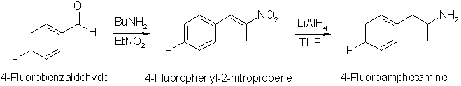

Pharmacology
It is known that amphetamine and methamphetamine cause their stimulant effect by inducing the release of dopamine in neuron in certain regions of the
brain. 4-substituted amphetamines has been shown to possess different pharmacological properties than the unsubstituted analog. It has been shown that
4-haloamphetamines in addition to their effect on dopamine also expresses serotonin-releasing effects, causing a long-term depletion of serotonin,
indicating a neurotoxic effect, much like the one suggested to occur with MDMA and some of its derivatives. However, among the 4-haloamphetamines, the
fluoro analog seemed to be atypical in that it did not cause any long-term changes in the brain serotonin levels, even though it was also a serotonin-releasing
agent like the other 4-haloamphetamines, although weaker than the other.
Tests has showed that 4-fluoroamphetamine substitutes for amphetamine in rats, but that it does not fully substitute for the serotonergic MDMA derivative
MBDB, which is the case of the other 4-haloamphetamines (which also did not substitute for amphetamine in the rats). As a conclusion, 4-fluoroamphetamine
is subjectively very similar to amphetamine, but with some effect on the serotonin release, probably making the effects have a touch of MDMA-like action.
Receptor interaction data suggests that racemic p-fluoroamphetamine is 2/3 as potent as d-amphetamine, probably suggesting that the racemic versions of
both drugs are almost equipotent. This seems to be an interesting analog of amphetamine for use as a stimulant, and probably the yet untested
4-fluoro-methamphetamine is too. It should be easily made by reducing the nitropropene below with Fe/HOAc to give 4-Fluoro-P2P, which can be reductively
aminated with methylamine to give the target compound. Are there any pioneers out there?
Qualitative comments (Mobius):
For your information, some distant aquintance of mine tasted some p-Fluoro-Amphetamine not to long ago, motivated by a rumor that it would supposedly
be much more potent than Amphetamine...
And you know what, it is slightly less potent (about 20% I would say) and is fairly different in terms of global
effects... (120 mg) Slow to come on... (T + 1h) Great feeling of warmth in the face and less in the rest of the body. (T + 1.5h) Disproportionatly great
feeling of euphoria compared to the stimulation (both physical and mental) felt! Funny stuff! Doesn't compare to anything he did before and, believe me this
guy has eaten a lot of exotic experimental materials and he knows what he's talking about!
NB: Above 200 mg the effect become too intense to clearly perceive the difference between this compound and regular Amphetamine.

Chemistry

The reaction is pretty straight-forward for a compound like this, but there are a few differences. The first step is the Henry condensation of
4-fluorobenzaldehyde with nitroethane, which goes in moderate yield with n-butylamine as catalyst under reflux. Using ethylenediammonium diacetate as
catalyst at room temperature results in a miniscule yield. The yield is better if the reaction mixture is cooled in the freezer before filtering.
Another variation would be to perform the reaction in 100ml of refluxing toluene instead of isopropanol, and using a Dean-Stark trap to separate the
formed water in the reaction which would drive the reaction forward. It is however unknown how well that technique would work, as another anhydrous condensation has been
attempted by Bandil, showing that the yields did not improve by using ethylamine as the catalyst and drying the reaction mixture over molecular sieves.
In the second reaction step, the intermediate nitropropene is reduced with Lithium Aluminum Hydride, but in this instance an unconventional
procedure is used. Instead of adding the nitroalkene to the LAH solution, a LAH solution is added dropwise to a solution of the nitroalkene. This is done
to minimize side-reactions. Excess LAH may dehalogenate the fluorine atom from the substrate, forming regular amphetamine, which is not what we want. By
using this addition sequence, it is ensured that the nitroalkene is always in excess, and not the LAH.
Another way of reducing the nitroalkene to the amphetamine is to perform the reaction in two steps, first reducing the double bond with sodium borohydride,
and then reduce the remaining nitro group to an amine using Zinc/Formic Acid. This route was been utilized in SpicyBrown's 4-Fluoroamphetamine Synthesis.
Experimental
4-Fluorophenyl-2-nitropropene2
4-fluorobenzaldehyde (24.8g, 0.2 mol), nitroethane (30g, 0.4 mol), 20ml of isopropanol and 1 ml n-butylamine were heated under reflux for 5h.
The reaction mixture was allowed to cool to room temperature overnight while crystallization occured. The crude yellow product was filtered and
recrystallized from a minimum of hot methanol to afford 20g (55%, 0.11 mol) of pale yellow crystals (mp 64-66�C).
4-Fluoro-amphetamine2
Lithium aluminum hydride (7.6 g, 0.2 mol), dissolved in 200ml THF was added dropwise to a stirred solution of 4-fluoro-phenyl-2-nitropropene
(18.1g, 0.1 mol) in 200ml dry THF and the mixture was allowed to stir at room temperature for 4h. The excess hydride was decomposed by the careful addition
of 7.5ml water, 7.5ml 15% NaOH and finally another 22.5ml of water. The mixture was filtered with suction, and the filter cake washed with 2x100ml warm THF.
The THF was removed under vacuum, and the crude residue dissolved in 100ml diethyl ether and extracted with 3x50ml 0.1M HCl. The combined acidic fractions
were basified with 25% ammonia and the crude product extracted with 3x50ml diethyl ether, the pooled extracts dried over MgSO4 and the solvent evaporated
under vacuum. The residue was distilled twice to afford 8g (52%) of 4-fluoro-amphetamine as a colorless liquid, bp 78�C at 10 mmHg (lit 95-96�C/17 mmHg,
96�C/19 mmHg), mp (HCl salt) 152-154�C. The hydrochloride salt can be prepared by dissolving the freebase in ten times the volume of diethyl ether, and
passing through dry HCl gas until no more crystals separate.
4-fluorobenzaldehyde From 4-chlorobenzaldehyde3
140 g (1 mol) of 4-chlorobenzaldehyde, 58 g (1 mol) of potassium fluoride,
5 g of nitrobenzene and 7.98 g of tetrakis(diethylamino)phosphonium bromide (phase transfer catalyst) are placed in a 500 ml four-neck flask fitted with
thermometer, anchor stirrer and reflux condenser with bubble counter. The mixture is subsequently heated while stirring to 190�C. and allowed to react for
20 hours. After the reaction is complete, the reaction mixture is allowed to cool, dissolved in chlorobenzene, insoluble constituents are filtered off and the
product (4-fluorobenzaldehyde) is purified by fractional distillation under reduced pressure. Yield 77%, with a selectivity of 93%.
{kind=link}